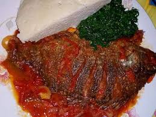

Wet Fried Fish recipe

Description
A simple recipe for a Kenyan meal, mostly common on the lakeside, that is lakes
Victoria. It's a common delicacy that is well known to be eaten by 'ugali'
Ingredients
- Deep fried tilapia
- 3 tomatoes
- 2 onions
- ginger and garlic paste
- bell papers
- parsley
- salt
- cooking oil
- 1/2 cup of water
Steps for cooking
- Add cooking oil to a pre-heated pot
- Add in the onions to cook until golden brown in color
- Add the ginger and garlic paste and cook for a few seconds
- Add the chopped tomatoes and saute untill broken down
- Add the well chopped bell papers and saute for 30 seconds
- Add a sprinkle of salt to the mixture and saute
- Add 1/2 cup water and bring the mixture to boil
- Dip the deep fried fish into the mixture and ensure it is well covered on both sides
- After 4 minutes, sprinkle your parsley and turn off the heat
- Serve with hot 'ugali' and veges